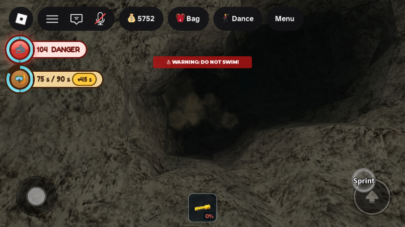
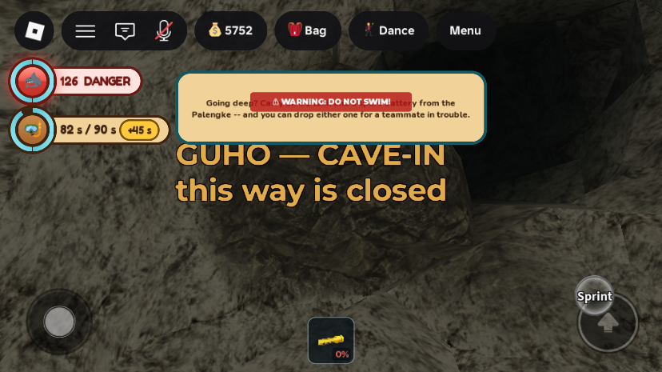
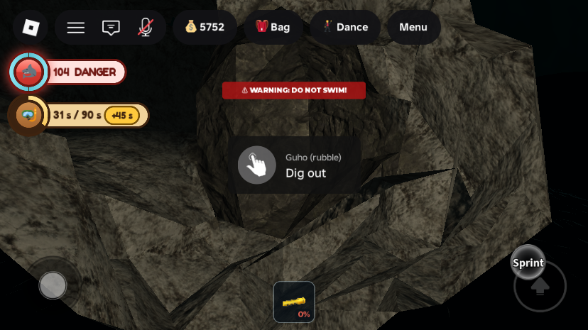

Phase 4: five to ten cave-ins a day, with a warning and a way to dig out
Not live yet. Like Phases 1 to 3, this reaches players only when the place is published from Studio.
What was asked
- "Change the daily cave-in from one collapse a day to a random 5–10, even if a diver is behind it."
- The owner accepted the plan's recommendations: a warning before each collapse, a dig-out for a trapped diver, and at most 3 collapses standing at once.
What changed
1. Five to ten collapses per island day
CaveInServiceused to drop one collapse per island day, clearing yesterday's first. Now each day (24 real minutes) it draws 5 to 10 (PER_DAY_MIN,PER_DAY_MAX). The day is cut into that many equal slots with one collapse at a random moment in each, so they spread out rather than bunch up. A new server's first collapse comes after 20 s (FIRST_DELAY).- Unchanged: only dead ends and deep runs can collapse (
CaveGen.Sealable), and the rock goes in near the far end, so the cave can never be cut in half and no air pocket is ever sealed off. - At most 3 stand at once (
MAX_STANDING). When a fourth falls, the oldest clears, so rubble moves around the cave instead of piling up. The passage cleared last is never the next to fall. workspace.CaveInPassagenow lists every standing collapse ("a; b; c"), and the newworkspace.CaveInCountgives how many. The cave audit's wording changed to match ("standing cave-ins", "returns when it clears").
2. A diver behind it no longer stops it; there is a warning instead


- The old rule skipped any passage with a diver within 45 studs of anything behind it, and the day passed with no collapse if every candidate was occupied. That rule is gone.
- Everyone within 80 studs (
WARN_RADIUS) gets 4 seconds of warning (WARN_SECONDS). A chat line says "The rock groans overhead. Something nearby is about to cave in!", and on screen the newCaveInClientplays a low rumble, a camera shake that builds with how close you are, and silt and grit drifting down along the plug. - When the rock falls, the same players get a crash, a hard short shake and a burst of dust.
- The sounds are Roblox's built-in files pitched down (
HalloweenThunder.wavfor the rumble,impact_explosion_03.mp3for the crash), so nothing was uploaded. The shake usesHumanoid.CameraOffset, the way SharkAlertController already does. - The silt is nearly self-lit (
LightInfluence0.1). The first version was lit like the rock and could not be seen in the dark cave; a warning nobody can see is not a warning. - No rock is ever filled on top of a diver. If someone is swimming inside the plug itself when it is due, it waits 3 s, up to 3 times, for them to move, then gives up on that passage.
- The rubble sign ("GUHO — CAVE-IN / this way is closed") now sits on the near face of the rubble, 3 studs clear of it, rather than floating in the middle of the rock. It is also smaller: at full size a lump of new rock hid half of it.
3. Digging out

- Divers behind a new collapse (within 45 studs of the rest of the passage, its chamber, or a deep run from that chamber) are told: "The way back caved in behind you! Swim to the rubble and hold to dig out (8 s)." They also get a toast.
- The rubble's far face has a "Dig out · Guho (rubble)" prompt, held for 8 s (
DIG_SECONDS, reach 12 studs) while air keeps draining. Digging through clears that collapse for everyone. Players within 80 studs get a chat line saying who dug through. - There is no prompt on the near side. Clearing rubble from outside is what the Susi ng Yungib is for (Phase 5).
- A Pating (shark player) can't dig.
All changes
| Instance | Change | |
|---|---|---|
ServerScriptService.CaveInService | rewrite | Day schedule (5–10 slots), warning, "never inside the plug" check, up to 3 standing, near-face sign, far-face dig prompt, trapped messages, CaveInCount. Studio-only hook ServerStorage.DebugCaveIn ("collapse", index?; "clear"). |
StarterPlayer.StarterPlayerScripts.CaveInClient | new | LocalScript: rumble, shake, silt and grit for "warn"; crash, hard shake and dust burst for "fall". |
ReplicatedStorage.Remotes.CaveInWarning | new | RemoteEvent (created by CaveInService): (kind, a, b, radius, seconds), where a and b are the plug's two ends. |
ServerStorage.CaveGen | edit | New M.SealRange exposes the plug's samples, radius and first/last index. Nothing else changed. |
ServerStorage.CaveAudit | edit | Report wording only ("standing cave-ins", "SEALED by a cave-in", "returns when it clears"). |
StarterPlayer.StarterPlayerScripts.NotificationController | edit | Chat colour for the new DiveFeedback kind cavein. |
Workspace.CaveIns.CaveIn_<n> | runtime | One Model per standing collapse: NearFace (BillboardGui sign) and FarFace (DigPrompt). Replaces the old single Workspace.CaveInMarker. |
Tuning (top of CaveInService): PER_DAY_MIN = 5, PER_DAY_MAX = 10, MAX_STANDING = 3, WARN_SECONDS = 4, WARN_RADIUS = 80, DIG_SECONDS = 8, TRAPPED_RADIUS = 45, FIRST_DELAY = 20, INSIDE_PAD = 4. Terrain changes are still runtime only; a new server starts from the clean carve. Every edited script was compile-checked with loadstring; nothing was removed from the map.
Testing
Three solo playtests on MERS_Cov2, each ended by kicking the player from the Server. (The kick after the second left Studio in Play mode with no players in it; it was stopped after that, with the save already released.) There were no script errors.
- Schedule: on start, "[CaveInService] day 1: 5 collapses on the way"; the first fell 20 s in (Last Breath Niche). An early version scheduled twice at start ("day nil") because it ran before DayNightCycle set the day. It now waits for the day to be set.
- Shut in: with the player anchored in the Hukay ng Kadiliman dead end, collapsing its passage sent the "fall" event, the "caved in behind you" message and the toast. The camera offset peaked at 1.04 studs and went back to 0, and the dust part appeared.
- Dig out: from 4.3 studs inside, holding the prompt for 8 s cleared the collapse ("MERS_Cov2 dug through..."). A voxel read showed 0 of 7 plug samples still basalt, against 7 of 7 in a standing plug.
- Cap of 3: four collapses in a row (Sump-Lock Pit, Cold Silt Trap, Stalactite Blind, Black Mud Siphon) held the count at 3, each clearing the oldest. The cleared plugs read 0 basalt.
- Warning, and never inside the plug: with the player anchored inside the Silt Curtain plug, the "warn" event and message arrived (shake up to 0.37 studs). The collapse then "held off: a diver stayed in the way" and never fell.
- Screenshots (above) used a Scriptable camera, the character hidden locally, and a dim local lamp at the camera, since the cave is black without a torch.
Gaps and things to check
- A whole island day was not watched. The 5–10 schedule was seen being set up (5 and 6 drawn), but only the first timed collapse fell on its own; the rest were forced with the hook.
- The cave audit with several collapses standing was not run. It flags rubble by material, so it should mark each as expected. The audit that ran at start had none standing.
- Sound levels were not heard (no audio in these captures). The rumble volume scales from 0.6 to 1.5 with distance; tune it if it is too loud or quiet.
- Not tested with two players: the "X dug through" line to others, and a friend being warned from 80 studs away.
- Dig time: an 8 s hold with the air still draining is harsh for a diver who reaches the rubble with little air left. That is the plan's intent; watch the drowning counts after launch.
- The old welcome panel and the existing "Going deep?" tip still pop up. The panel is replaced in Phase 8.
- Test account: MERS_Cov2 drowned once while anchored underwater, which cost a real Health Post bill of 15% (6,766 → 5,752 Peso, saved). No quick-test values were left in the place.
Bodega.AxeDamage = 20from before is still there, to be restored in Phase 7.